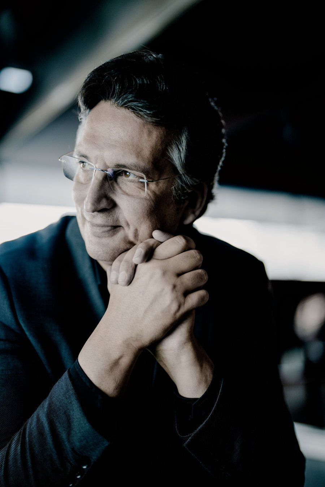
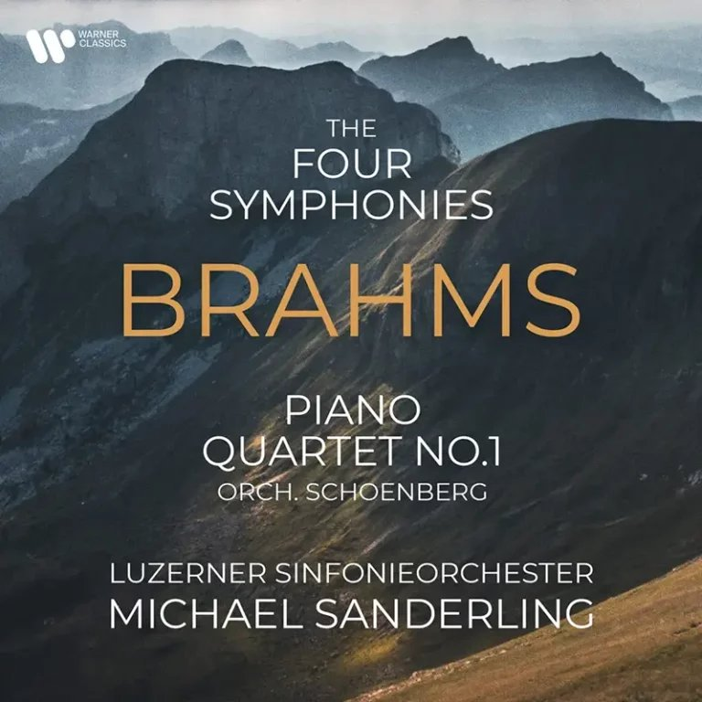
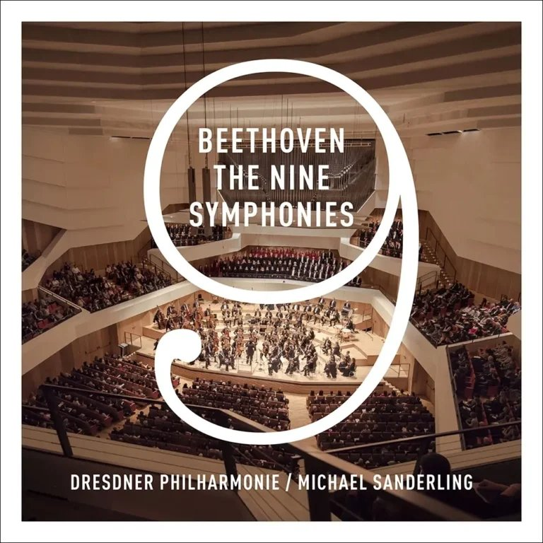
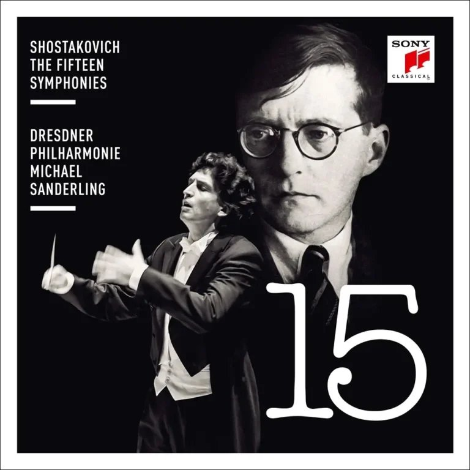
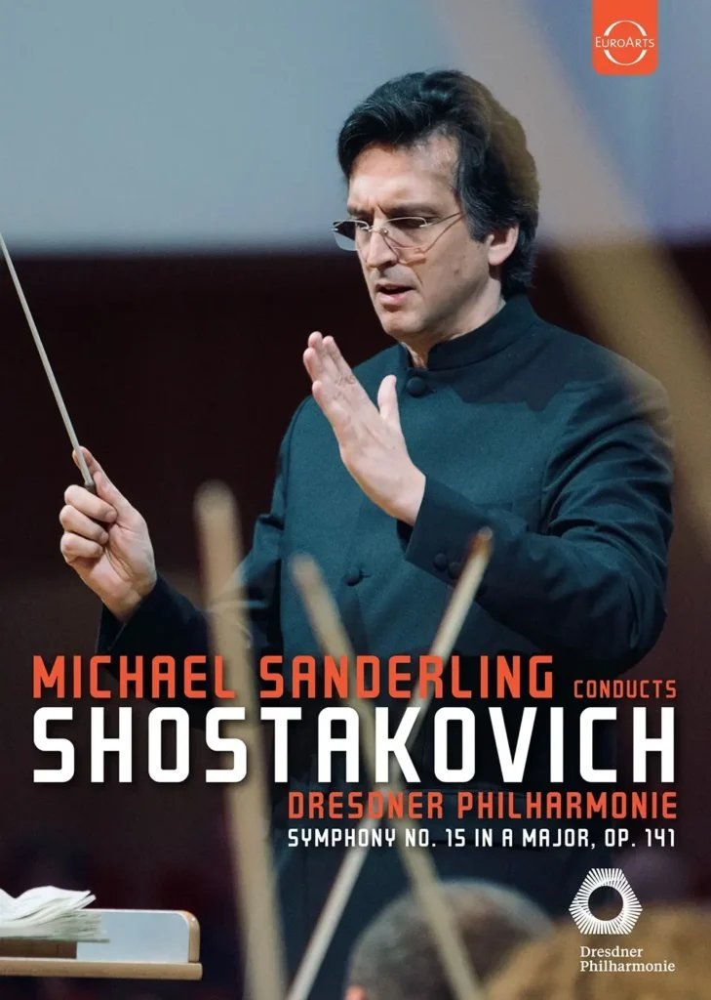

Anyone who experiences Michael Sanderling on the podium today immediately senses the deep, tangible connection he has with the musicians before him. Every gesture reveals a precision that does not merely instruct, but empathizes. His current work at the helm of the Lucerne Symphony Orchestra and his formative era with the Dresden Philharmonic constitute the two pillars of a conducting career that occupies a firm place in international musical life. Sanderling has established himself as one of the most distinguished conductors of our time, setting standards with his interpretations of late Romantic and modern masterpieces.
Since the 2021/22 season, Michael Sanderling has led musical life in Lucerne as Chief Conductor. He took on the task of leading the Lucerne Symphony Orchestra into a new era and sharpening the international profile of this tradition-steeped ensemble, particularly in the late Romantic repertoire of Bruckner, Mahler, and Richard Strauss. The success of these creative partnerships is evidenced by the internationally acclaimed Brahms cycle released on Warner Classics and the collaboration with piano legend Elisabeth Leonskaja. This tireless pursuit of interpretive excellence recently received official recognition at the highest level: expert committees nominated Michael Sanderling for the renowned German music prize, Opus Klassik, in the category "Conductor of the Year 2026."
Through visionary projects—such as the multimedia combination of Shostakovich's 10th Symphony with animations by artist William Kentridge—he carries the orchestra's reputation from the shores of Lake Lucerne far into the world. This global influence is expressed in a busy, highly regarded touring schedule: under his leadership, the Lucerne Symphony Orchestra has performed in major music metropolises across Europe, South America, and Asia.
This international recognition has led to lasting, close artistic partnerships with the world's most significant orchestras over the years. Michael Sanderling connects with these orchestras through much more than standard guest conducting; deep mutual trust has defined their collaborative work. In the German-speaking world, he developed intensive relationships with the Berliner Philharmoniker, the Gewandhausorchester Leipzig, the Vienna Symphony, the Munich Philharmonic, the SWR Symphony Orchestra Stuttgart, the Gürzenich Orchestra Cologne, the Konzerthausorchester Berlin, the NDR Radiophilharmonie Hannover, the Musikkollegium Winterthur, and the Tonhalle-Orchester Zurich. These close ties continued at the European level, where he worked as a valued partner with ensembles such as the Royal Concertgebouw Orchestra Amsterdam, the Orchestre de Paris, and the Philharmonia Orchestra London. The musical resonance extended far beyond the European continent to Asia, where he maintains a continuous, productive partnership with the NHK Symphony Orchestra in Tokyo, the Hong Kong Philharmonic Orchestra, and the KBS Symphony Orchestra in Seoul. His analytical yet collaborative approach created a foundation for profound, long-matured interpretations at these international elite orchestras.
Sanderling laid the foundation for his international standing in the grand symphonic field during his tenure at the head of the Dresden Philharmonic from 2011 to 2019. Those years were marked by renewal and success: under his leadership, the orchestra moved into the new, acoustically brilliant concert hall in the Dresden Kulturpalast. On extensive tours to Japan, South Korea, South America, and across Europe, he forged the orchestra into a cohesive interpretive unit.
The enduring monument of this fruitful era is the monumental complete recording of all symphonies by Ludwig van Beethoven and Dmitri Shostakovich for the label Sony Classical. This comparative release is considered an undisputed discographic milestone of recent music history for its analytical sharpness, perfect sonic balance, and emotional power. That he also masterfully commanded the theatrical craft during this time was proven in the opera world: his staging of Prokofiev's "War and Peace" at the Cologne Opera earned him the renowned "Conductor of the Year 2011" award.
Sanderling's current sovereignty as Chief Conductor in Lucerne and his successes in Dresden are based on a profound understanding of the orchestral apparatus, which he developed in the decades prior. Before dedicating himself entirely to conducting, he belonged to the absolute world elite of cellists. Following his soloist debut, he traveled the world's stages as an internationally sought-after cello soloist, performing with top American orchestras such as the Boston Symphony Orchestra and the Los Angeles Philharmonic, as well as European orchestras like the Orchestre de Paris and the Vienna Symphony, and numerous leading orchestras in Germany. Parallel to this, from 1987, he held the position of principal cellist of the Gewandhausorchester Leipzig under Kurt Masur and later with the Berlin Radio Symphony Orchestra. Chamber music also deeply shaped him: from 1988 to 1996, he was a foundational member of the Trio Ex Aequo, whose debut at the Lucerne Festival in 1989 left a lasting impression. He ended his active career as a concert cellist in 2010 to devote himself entirely to the baton. He had previously set his first milestones as a conductor as Chief Conductor of the Kammerakademie Potsdam (2006–2011) and in his very first chief position with the Berlin Chamber Orchestra.
Beyond the great concert stages in Lucerne and Dresden, passing on his vast experience to the next generation runs like a common thread through his entire life. For almost three decades—since 1998—Michael Sanderling has taught as a professor of violoncello at the University of Music and Performing Arts Frankfurt am Main. He has always combined this academic anchoring with work with top youth orchestras; for example, as the long-time leader of the German String Philharmonic, he shaped the next generation of German orchestral musicians.
The fact that music is in Michael Sanderling's blood seems perfectly natural given his background. Born in East Berlin in 1967, he grew up as the son of double bassist Barbara Sanderling and legendary conductor Kurt Sanderling at an epicenter of European cultural life. His training at the Hanns Eisler School of Music Berlin with Josef Schwab and masterclasses with icons like Yo-Yo Ma laid the foundation for his ascent. It is this rare symbiosis of familial influence, the phenomenal Dresden and Lucerne eras, and his own experience as a world-class soloist and partner of global elite orchestras that distinguishes Michael Sanderling today. His strengths lie in a relentless structural clarity and the ability to intellectually penetrate music completely without depriving it of its soul—a true architect of sound.
Berliner Philharmoniker, Hong Kong Philharmonic Orchestra, Dallas Symphony Orchestra, Leipzig Gewandhaus Orchestra, NDR Radio Philharmonic Hanover, KBS Symphony Orchestra Seoul, Milwaukee Symphony Orchestra, Vienna Symphoniker, Konzerthausorchester Berlin, Helsinki Philharmonic Orchestra, Gothenburg Symphoniker, Norwegian Radio Orchestra, The Florida Orchestra, Düsseldorfer Symphoniker, BBC Scottish Symphony Orchestra, Dresden Philharmonic, Hyogo PAC Orchestra, National Symphony Orchestra of Taiwan, Nagoya Symphony Orchestra, Osaka Symphony Orchestra, Musikkollegium Winterthur, Antwerp Symphony Orchestra, Guerzenich Orchestra Cologne, Essen Philharmonic, Orquestra Simfònica de Barcelona, Orquesta Sinfónica del Principado de Asturias, Orquestra Sinfónica do Porto, Irish National Symphony Orchestra, Shanghai Philharmonic, Orquestra Gulbenkian

Débuts des pianistes néerlandais Arthur et Lucas Jussen à l’Orchestre philharmonique de Berlin. Après les débordements d’allégresse émanant des deux natifs d’Hilversum, confondus avec des artistes de rock, Brahms orchestré par Schönberg remet les pendules à l’heure. Les membres de la glorieuse institution – galvanisés par Michael Sanderling – offrent une maîtrise instrumentale transcendante. …
Archive to be added.
Since the 2021/22 season, Michael Sanderling has served as chief conductor of the Lucerne Symphony Orchestra. This appointment marked the logical continuation of a long-standing, close partnership aimed at further establishing the orchestra’s international reputation in the late Romantic repertoire—particularly with works by Bruckner, Mahler, and Strauss. Tours throughout Europe, Asia, and South America, as well as innovative projects, attest to the impact of this collaboration. Particular attention was drawn to the multimedia production of Shostakovich’s Symphony No. 10 featuring artist William Kentridge, which, following its premiere at the KKL Lucerne and in Pompeii, enjoyed triumphant performances at the Vienna Konzerthaus and the Philharmonie de Paris.
Seit der Saison 2021/22 prägt Michael Sanderling als Chefdirigent das Luzerner Sinfonieorchester. Die Ernennung war die konsequente Fortführung einer langjährigen, engen Partnerschaft mit dem Ziel, das Orchester im spätromantischen Repertoire – insbesondere mit Werken von Bruckner, Mahler und Strauss – international weiter zu profilieren. Tourneen durch Europa, Asien und Südamerika sowie innovative Projekte zeugen von der Strahlkraft dieser Zusammenarbeit. Besondere Beachtung fand die multimediale Produktion von Schostakowitschs 10. Sinfonie mit dem Künstler William Kentridge, die nach ihrer Premiere im KKL Luzern und in Pompeji triumphale Aufführungen im Wiener Konzerthaus und der Philharmonie de Paris feierte.
Luzerner Sinfonieorchester, Rundfunkchor Berlin, Michael Sanderling, Audio CD (2025), WARNER

Luzerner Sinfonieorchester, Michael Sanderling, Audio CD (2023), WARNER

Dresdner Philharmonie, Michael Sanderling, Audio CD (2018), SONY

Dresdner Philharmonie, Michael Sanderling, Audio CD (2019), SONY

Dresdner Philharmonie, Michael Sanderling, DVD, EUROARTS
Thomas Voigt
TVM artists
+49 30 120 7666 896
thomas@tvmartists.com
tvmartists.com
Kindly direct all correspondence to email
Postal address in special reasons
Kurfürstendamm 157-158
c/o Kanzlei Dr. Cobet
10709 Berlin
板垣千佳子 Chikako Itagaki
Novellette Artists Management
合同会社ノヴェレッテ
Tel: 81(0)90-4168-2866
chikako.itagaki@novellette-arts.com
novellette-arts.com
Dacian Predan-Hallabrin
PHAM
Predan-Hallabrin Arts Management
Tel: 40 744-224-228
dacian@predan-hallabrin.com
predan-hallabrin.com
Alexandra MacDonald / Gabriel Sommerfeld
office@michaelsanderling.com
Photo credit: © Marco Borggreve